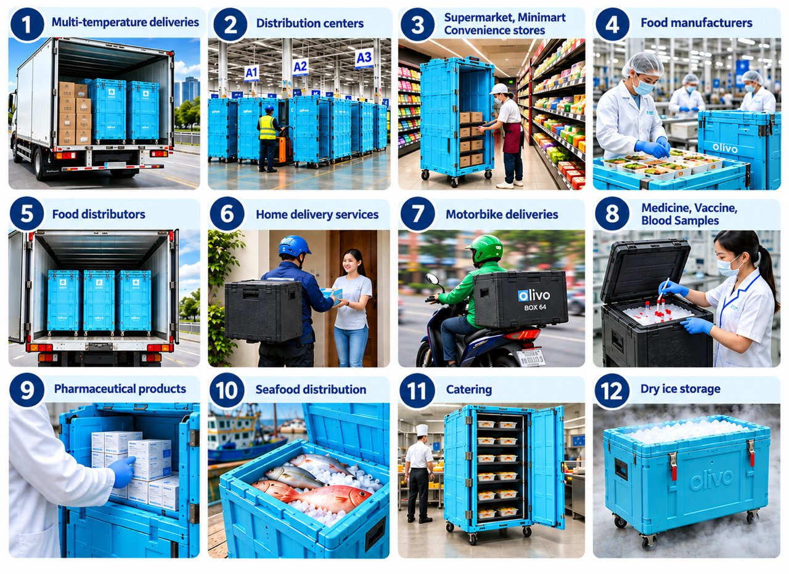

Olivo - Logistique à froid
Solution de livraison durable pour produits périssables
Provigood est le distributeur autorisé des solutions frigorifiques passives Olivo - Logistique à froid au Vietnam et au Cambodge.

Chaîne frigorifique parfaite, de la chambre froide à l'étal
- Préparation de commande
- Plaque eutectique ou injection de glace carbonique (système Siber)
- Attente sur quai avant chargement
- Transport en véhicule non réfrigéré
- Mise en rayon
Du stockage aux rayons, la fraîcheur livrée sans compromis. 100% sûr, à tout moment.
Découvrez les solutions frigorifiques passives Olivo - Logistique à froid
Les conteneurs isolés Olivo - Logistique à froid permettent le transport sécurisé de marchandises à température contrôlée jusqu'à 12 heures (BOX) et 72 heures (BAC, ROLL) sans réfrigération mécanique ou camions frigorifiques. Les conteneurs isolés Olivo - Logistique à froid utilisent diverses sources de froid telles que les plaques eutectiques ou le froid cryogénique pour remplacer le refroidissement mécanique.
Principaux avantages
1Sécurité
- Protège l'intégrité et la qualité des produits sensibles à la température dans toute la chaîne frigorifique.
- Maintient les températures requises jusqu'à 72 heures (BAC, ROLL) ou 12 heures (BOX) sans réfrigération mécanique.
- Fabriqué à partir de matériaux de qualité alimentaire adaptés aux applications alimentaires et pharmaceutiques.
- Aide à prévenir la contamination croisée par la ségrégation sécurisée des produits.
2Conformité
- Améliore la qualité des produits et la conformité réglementaire.
- Les conteneurs OLIVO BAC et ROLL sont certifiés A.T.P. (Nations Unies, Accord pour le transport de denrées périssables) par CEMAFROID.
- Soutient la conformité avec la loi vietnamienne sur la sécurité alimentaire n° 55/2010/QH12 et son dernier décret d'application, le décret n° 46/2026/ND-CP.
- Facilite la mise en œuvre de HACCP, ISO 22000 et GDP (Bonnes pratiques de distribution) en garantissant un contrôle de température fiable dans toute la chaîne frigorifique.
3Durabilité
- Les conteneurs isolés Olivo sont conçus pour une utilisation professionnelle intensive quotidienne. Ils nécessitent peu d'entretien et offrent une fiabilité exceptionnelle à long terme.
- Durée de vie moyenne de 12 ans pour BAC et ROLL.
- Durée de vie moyenne de 6 ans pour BOX.
- Les plaques eutectiques ont une durée de vie illimitée dans les conditions de fonctionnement quotidien normal.
4Durabilité environnementale
- Soutient les objectifs ESG et de durabilité de votre entreprise.
- Réduit la dépendance aux véhicules réfrigérés et la consommation de diesel. Diminue les émissions de CO2.
- Les Olivo BOX sont fabriqués à partir de PPE (polypropylène expansé) 100% recyclable.
- Remplace l'emballage en polystyrène à usage unique par des conteneurs durables et réutilisables.
5Rentabilité
- Retour sur investissement (ROI) typique de moins de 24 mois.
- Transportez les produits nécessitant différentes plages de température dans le même véhicule.
- Réduisez le nombre de livraisons et optimisez l'utilisation des véhicules.
- Remplacez les camions réfrigérés par des véhicules standards dans de nombreuses opérations.
- Réduisez les coûts de transport en moyenne de 30%.
- Bénéficiez de l'un des coûts totaux de possession (TCO) et coûts par utilisation (CpU) les plus bas du marché.
Large gamme d'applications
- Livraisons multi-températures
- Centres de distribution
- Supermarchés, minimarchés, magasins de proximité
- Fabricants alimentaires
- Distributeurs alimentaires
- Services de livraison à domicile
- Livraisons à motocyclette
- Médicaments, vaccins, échantillons de sang
- Produits pharmaceutiques
- Distribution de fruits de mer
- Restauration
- Stockage de glace sèche

Durabilité environnementale & impact ESG
Les conteneurs isolés Olivo - Logistique à froid aident les entreprises à atteindre leurs objectifs de conformité RSE et ESG en :
- Sécurisant la chaîne frigorifique à tout moment lors du picking, du chargement et du déchargement, augmentant la sécurité alimentaire et réduisant le gaspillage alimentaire.
- Réduisant les trajets de livraison en combinant plusieurs températures de marchandises dans un seul véhicule, diminuant la consommation de carburant et les émissions de CO2 tout en améliorant la circulation urbaine, réduisant la consommation d'énergie et les coûts de livraison.
- Remplaçant les boîtes en polystyrène à usage unique par des alternatives réutilisables, durables et recyclables, réduisant les déchets plastiques à usage unique.
Provigood expose les solutions Olivo au salon Vietnam CO-REF et SMART DELIVERY 2026, Binh Duong

Provigood expose les solutions Olivo au salon Vietnam CO-REF et SMART DELIVERY en 2026, Binh Duong.
Questions fréquemment posées, Olivo - Logistique à froid
Qu'est-ce qu'Olivo - Logistique à froid et comment ça fonctionne ?
Fondée en 1956, Olivo - Logistique à froid est le principal fabricant français de conteneurs passifs à température contrôlée. Représentée par Provigood au Vietnam et au Cambodge, les solutions Olivo maintiennent les températures requises sans réfrigération mécanique. Grâce aux plaques eutectiques ou au refroidissement cryogénique, elles préservent l'intégrité de la chaîne frigorifique jusqu'à 12 heures (BOX) et jusqu'à 72 heures (BAC et ROLL). Certifiés ATP pour le transport de denrées périssables, les conteneurs Olivo ont une durée de vie supérieure à 12 ans et permettent des livraisons multi-températures dans un seul camion sec ou une seule motocyclette, réduisant considérablement la consommation de carburant, les émissions de CO2 et les coûts de distribution.
Quels formats Olivo propose-t-il ?
Olivo propose trois gammes de conteneurs isolés passifs — BOX, BAC et ROLL — avec des capacités de 30L à 1 400L pour répondre à tous les besoins de transport. Conçus pour une utilisation sur motocyclettes, voitures, camionnettes et camions, ils offrent un transport sûr et fiable à température contrôlée pour les produits alimentaires et pharmaceutiques. Combinées à des plaques eutectiques ou un refroidissement cryogénique, les solutions Olivo maintiennent des températures réfrigérées ou congelées pour des durées de transport allant jusqu'à 72 heures, sans réfrigération mécanique. Contactez-nous pour un catalogue détaillé et un devis.
Où et par qui Olivo est-il utilisé ?
Les solutions Olivo sont utilisées dans plus de 50 pays par des entreprises opérant dans les secteurs de l'alimentation, de la pharmacie, de la santé, de la vente au détail, de la restauration, du e-commerce et de la logistique. Elles sont plébiscitées par les fabricants, distributeurs, grossistes, détaillants, hôpitaux, laboratoires, pharmacies et prestataires logistiques tiers (3PL) pour un transport à température contrôlée sûr, fiable et durable. Adaptés aux livraisons urbaines du dernier kilomètre comme à la distribution longue distance, les conteneurs Olivo performent partout où la chaîne frigorifique doit être maintenue sans réfrigération mécanique.
Puis-je devenir sous-distributeur d'Olivo ?
Oui, Provigood est ouvert aux partenariats de référencement et de sous-distribution spécifiques à un canal, un client ou une région au Vietnam et au Cambodge. Nous recherchons également des partenaires capables d'offrir des services de location, de maintenance et des produits ou services connexes.
Contactez-nous via notre partner page si vous disposez d'un réseau établi.
Demander un devis ou une démo
Parlez-nous de vos volumes, de vos flux de livraison et de vos objectifs de durabilité. Nous vous envoyons une proposition personnalisée : formats, tarifs, logistique, sous cinq jours ouvrables.
Échantillons et démonstrations gratuits disponibles pour les acheteurs qualifiés. Aucun engagement avant un alignement complet sur les volumes et les conditions.